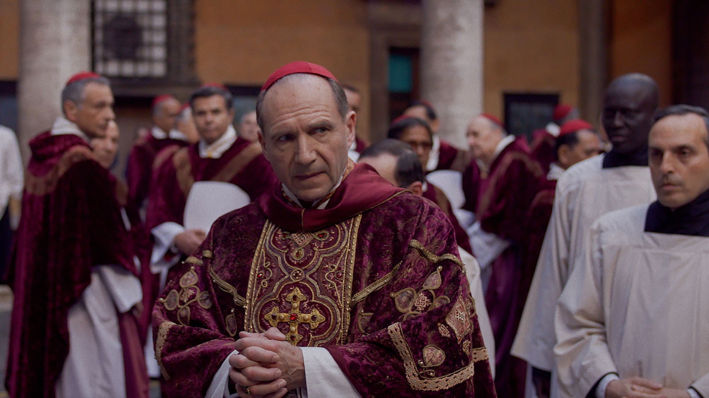
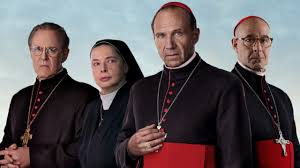
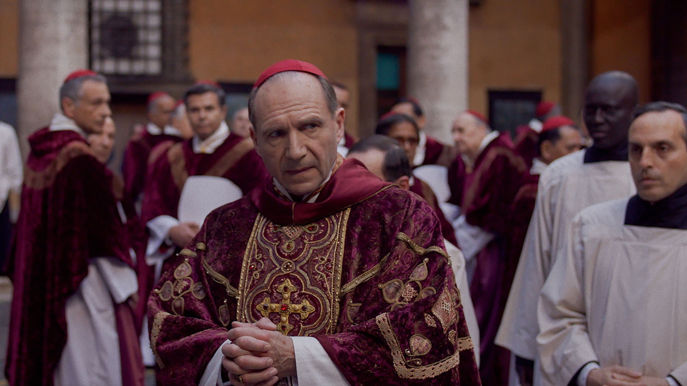
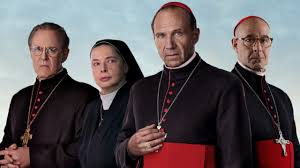

Conclave
 



RESENHA
O filme Conclave retrata a tradicional cerimônia feita após a morte do papa, que dá o nome ao filme, desse modo, o decano Lawrence iria liderar o conclave. Entretanto os alguns cardeais participantes da votação se mostram envolvidos em problemas que os invalidavam da votação, mostrando uma corrupção que há entre os mais altos membros da igreja. Sendo assim, a história é cheia de reviravoltas, e mostra um lado obscuro na decisão do novo papa, em que não esperávamos haver tanta malandragem entre os líderes da igreja. No final, o novo papa é o último membro que entrou para o colégio de cardeais e ninguém fazia a ideia que ele participava, além de vir de um lugar onde não é que a igreja não é tão conhecida. Ele vira apenas o favorito após o seu discurso em uma discussão entre os padres, em que disse não precisar de toda esta infantilidade na votação. No fim de tudo, o decano Lawrence descobre que nem ele poderia ser o santo padre pois ele era hermafrodita, mas nada foi feito e ele se tornou o novo líder da igreja católica. O filme consegue retratar bem toda a votação e os possíveis problemas que ocorrem durante ela, além disso, o final traz uma luta em que pessoas que não possam seguir o caminho da religião, devem continuar resistindo. Apenas acredito que a história poderia ser explorada mais e não ter um final tão curto.
NOTA

9,3 / 10